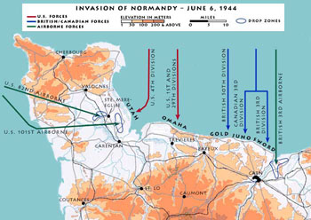
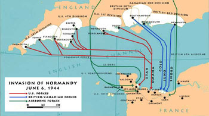

MAP A: Is this a large scale map OR a small scale map?

MAP B: Is this a large scale map OR a small scale map?

What information does the large scale map provide that the small scale does not? (There may be more than one correct answer!)
drop zone